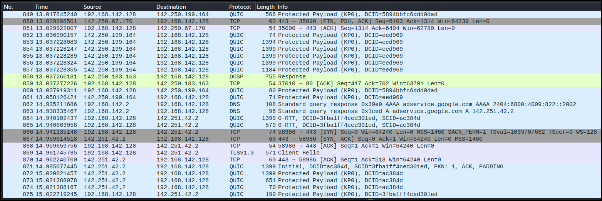

Layer 4 Which is the transport layer of the OSI model
Tranmission Control Protocol
Tcp is connection oriented and more reliable.
Website which is http or https
SSH or FTP those all utilize tcp
User DataGram Protocol
Udp is connection less and less reliablitly.
Streaming services
DNS
Voice over IP
TCP works on 3 way handshake.
3-way Handshake
Which send a Syn packet and will receive back a Syn ack packet and finally will send a Ack packet.
SYN - SYN ACK - ACK
If we go to our friend and say Hello to him (i.e. Syn)
If friend acknowledge us back by saying hello (i.e. Syn Ack)
Than we are good to go and start our conversation (i.e. Ack)
Http : Port 80
Https : Port 443
We can see the 3 way handshake by using wireshark.
